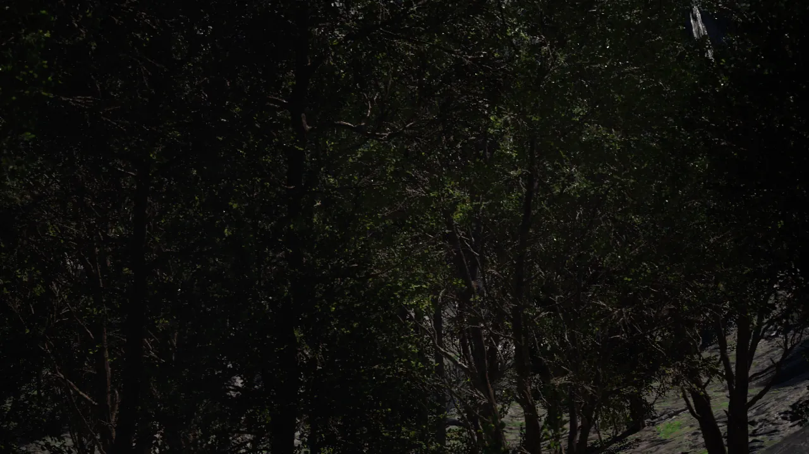

Scene Builder
A visual interface for composing simulation environments and time series scenarios. Place assets, configure sensor parameters, and export annotated imagery — no code required.
Generate fully annotated EO imagery at scale — across any domain, any condition — without a single real-world collection mission.

Build individual scenarios visually or generate high-variance datasets programmatically.
A visual interface for composing simulation environments and time series scenarios. Place assets, configure sensor parameters, and export annotated imagery — no code required.
A code-first pipeline for large-scale dataset generation with maximum randomization. Define distributions over scene parameters — asset placement, lighting, weather, sensor noise, backgrounds — and sample thousands of labeled images programmatically.
Every scene variable — asset pose, scale, occlusion, lighting angle, atmospheric conditions — is configurable as a distribution.
Run headless across cloud infrastructure. Generate orders of magnitude more data than the scene builder with a single script.
Wider randomization ranges and combinatorial sampling cover edge cases the scene builder's manual workflow can't efficiently reach.
from nulllabs import SceneGenerator
gen = SceneGenerator(domain="maritime")
gen.randomize(
weather=["clear", "overcast", "fog"],
n_assets=(1, 8),
sensor_resolution=["1080p", "4K"],
)
gen.export(n=10_000, output="./dataset")Any real-world asset can be added to our simulation database. We convert video or photo captures into high-fidelity 3D models — no manual modeling required.
Photograph or video an asset from multiple angles. Standard camera hardware is sufficient.
Our neural reconstruction pipeline produces a detailed 3D model with accurate geometry and appearance.
Assets are added to the simulation database and immediately available for synthetic data generation across all domains.
Generate data across the operational environments your perception system must understand.